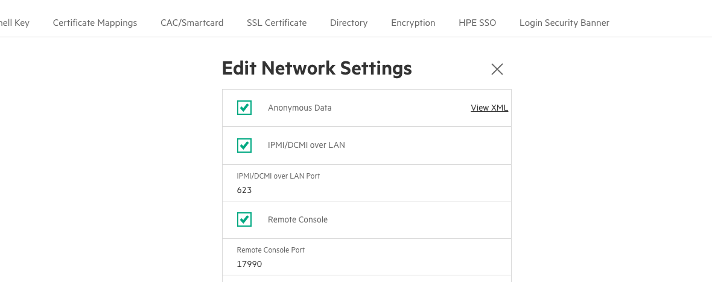

Perform this procedure to enable the IPMI/DCMI settings on an HPE UAN that are necessary to continue UAN product installation on an HPE Cray EX supercomputer.
Perform the first three steps of Prepare for UAN Product Installation before performing this procedure.
Create the SSH tunnel necessary to access the BMC web GUI interface.
a. Find the IP or hostname for a UAN.
b. Create an SSH tunnel to the UAN BMC. Run the following command on an external system.
In the following example, `UAN_MGMT` is the UAN iLO interface host name or IP address. `NCN` is the host name or IP address of a non-compute node on the system. This example assumes that `NCN` allows port forwarding. `USER` will usually be `root`.
```bash
$ ssh -L 8443:UAN_MGMT:443 USER@NCN
```
c. Wait for SSH to establish the connection.
Open https://127.0.0.1:8443 in web browser on the NCN to access the BMC web GUI.
Log in to the web GUI using default credentials.
Click Security in the menu on the left side of the screen.
Click Access Settings in the menu at the top of the screen.
Click the pencil icon next to Network in the main window area.
Check the box next to IPMI/DCMI over LAN.
Ensure that the remote management settings match the following screenshot.
